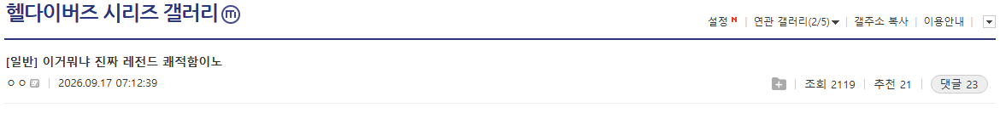
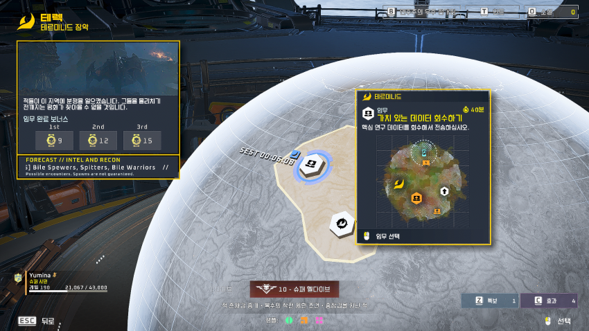
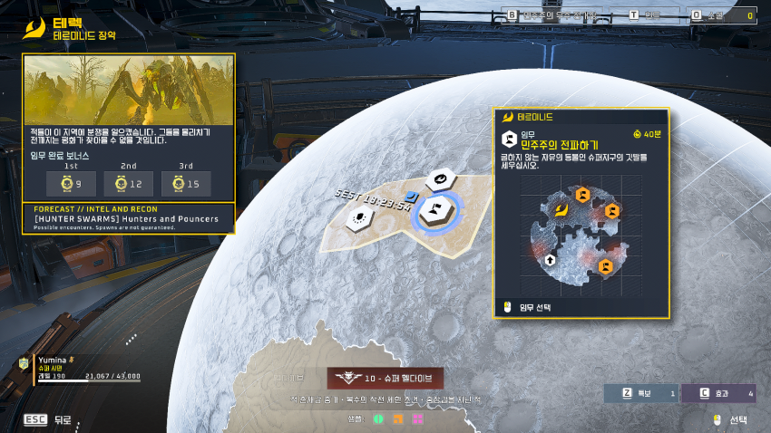
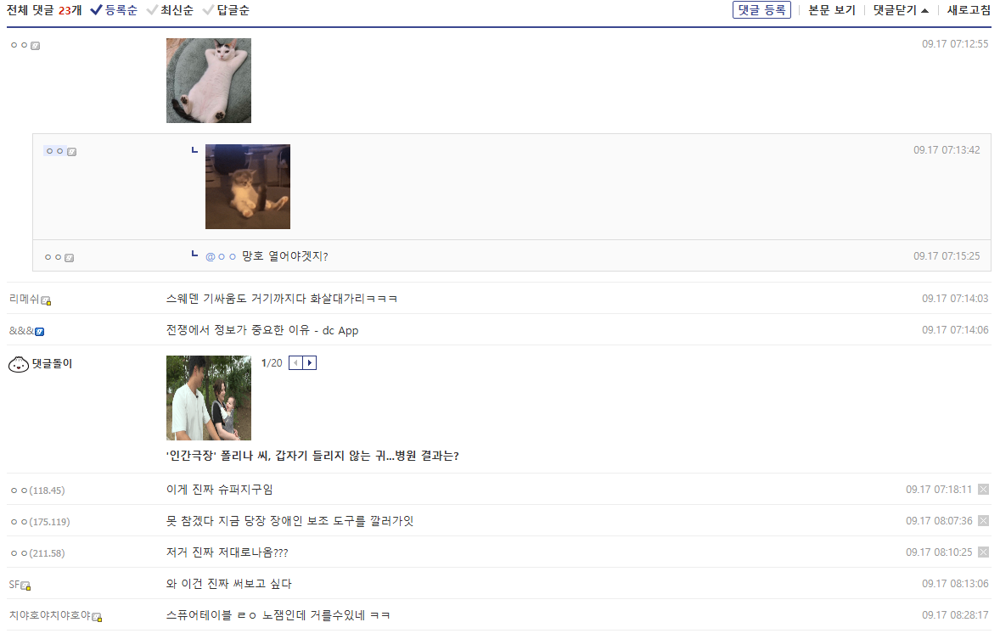
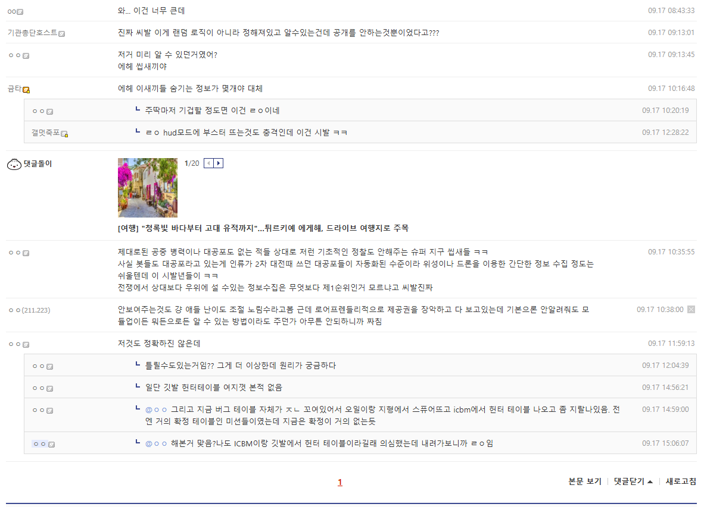

강하하기 전에 투입할 지역에 어떤 몹이 나오는지 모드를 통해 알 수 있게 됨
유저들이 시작하기 전에 어떤 몹들이 나오는지 알 수 있게끔 좀 패치해달라고 개발자들한테 계속 얘기 했는데
패치 안해주다가 결국 이 모드를 통해 개발자들이 기싸움질 한다고 패치 안했다는 합리적 의심이 솟구치는 상황





강하하기 전에 투입할 지역에 어떤 몹이 나오는지 모드를 통해 알 수 있게 됨
유저들이 시작하기 전에 어떤 몹들이 나오는지 알 수 있게끔 좀 패치해달라고 개발자들한테 계속 얘기 했는데
패치 안해주다가 결국 이 모드를 통해 개발자들이 기싸움질 한다고 패치 안했다는 합리적 의심이 솟구치는 상황
적이 뭐가 나올지 몰라서 최대한 모든 상황에 대처할 수 있는 세팅으로 다니면 사기무기 하나만 많이 쓴다는 이유로 하향 쳐때린다고
ㄹㅇㅋㅋ
로드아웃 저장기능좀 처넣어라 그게어렵냐 시발것들아
피눈물흘리면서 개추
곤조가 있어
모르고 가는게 더 무섭고 재밌긴하냐? 어떤 셋팅이 제일 절망스럽고 스타쉽트루퍼스 느낌이냐
우주에서 제공권 다 장악하고 있는데 저거하나 확인못하는게 이상하긴 했지
10단계도 못깨는 븅개발자인데 기대안하는게 맞음